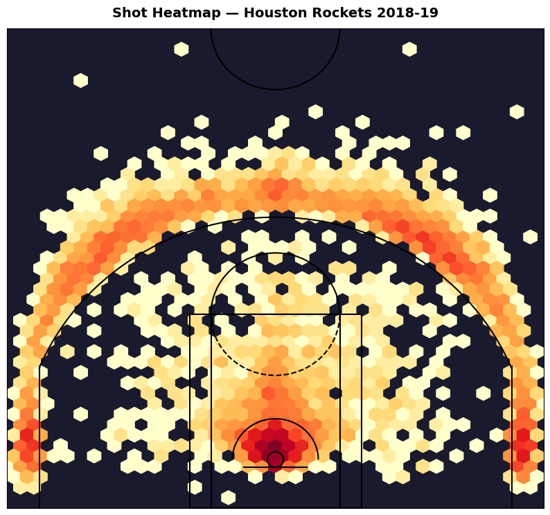
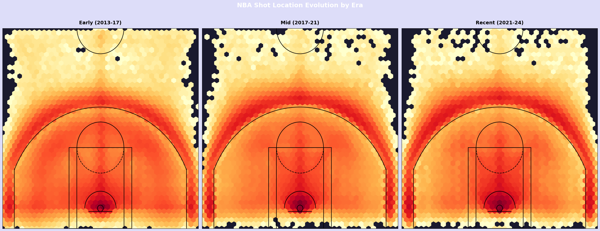
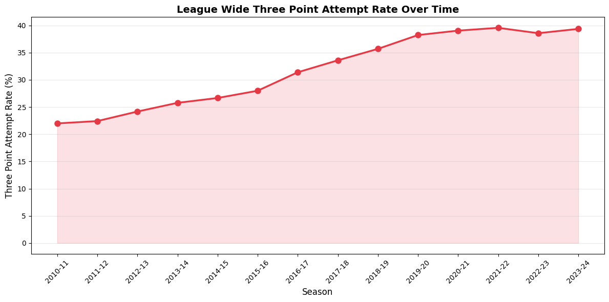
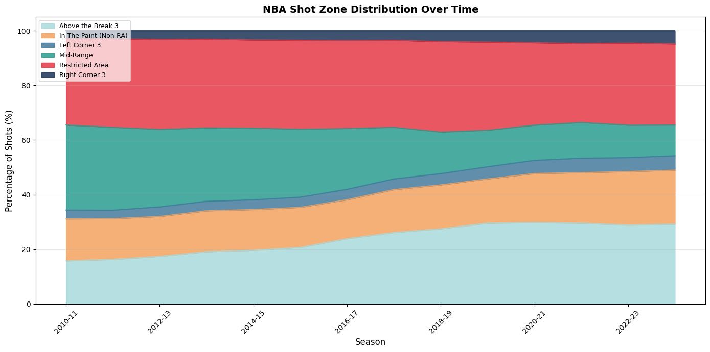
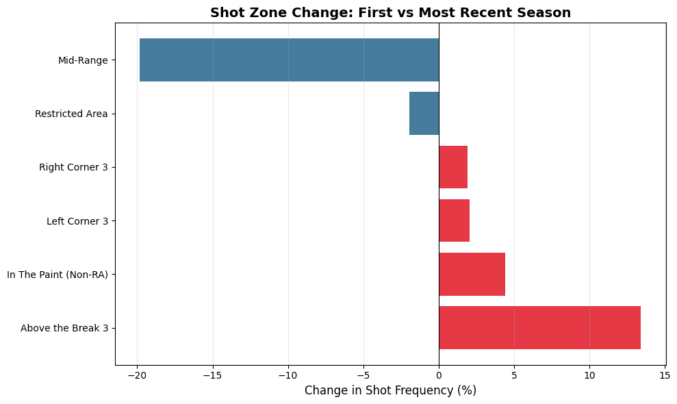
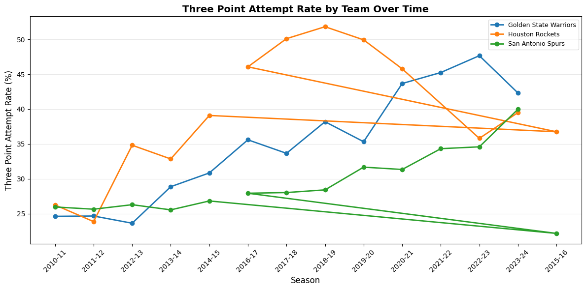
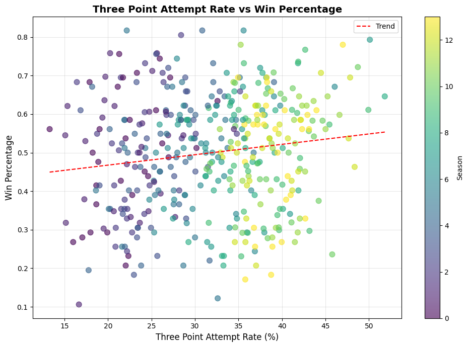
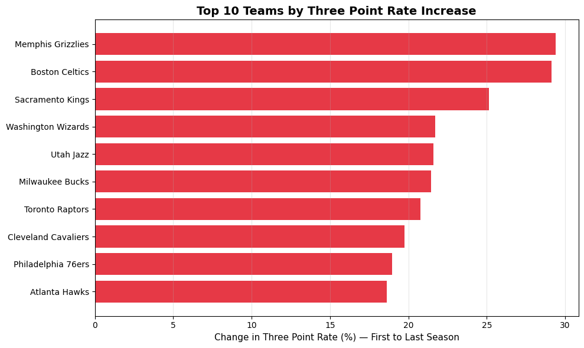

from src.data_collection import get_multiple_seasons_shot_data, get_team_season_metrics, save_dataset
seasons = [
"2010-11", "2011-12", "2012-13", "2013-14", "2014-15", "2015-16", "2016-17", "2017-18",
"2018-19", "2019-20", "2020-21", "2021-22", "2022-23", "2023-24"
]
# shot_df = get_multiple_seasons_shot_data(seasons)
# save_dataset(shot_df, "data/shot_data.csv")
# metrics_df = get_team_season_metrics(seasons)
# save_dataset(metrics_df, "data/team_season_metrics.csv")from src.data_collection import load_shot_data, save_dataset, load_dataset
from src.data_cleaning import clean_shot_data, clean_team_metrics
raw_shots = load_dataset("data/shot_data.csv")
raw_metrics = load_dataset("data/team_season_metrics.csv")
clean_shots = clean_shot_data(raw_shots)
clean_metrics = clean_team_metrics(raw_metrics)
save_dataset(clean_shots, "data/shot_data_clean.csv")
save_dataset(clean_metrics, "data/team_metrics_clean.csv")
print(clean_shots["zone_basic"].value_counts())
print(clean_shots["era"].value_counts())Loaded part 1: 706,440 rows
Loaded part 2: 706,440 rows
Loaded part 3: 706,440 rows
Loaded part 4: 706,443 rows
Assembly complete: 2,825,763 total rows
Starting shot data cleaning pipeline...
Dropped 0 rows with missing coordinates
Dropped 0 backcourt shots
Cleaning complete. Final shape: (2825763, 16)
Saved 2825763 rows to data/shot_data_clean.csv
Saved 420 rows to data/team_metrics_clean.csv
zone_basic
Restricted Area 891110
Above the Break 3 678028
Mid-Range 571860
In The Paint (Non-RA) 459957
Left Corner 3 116868
Right Corner 3 107940
Name: count, dtype: int64
era
Early (2013-17) 1379907
Mid (2017-21) 801558
Recent (2021-24) 644298
Name: count, dtype: int64from src.analysis import (
zone_distribution,
three_point_rate_by_season,
compare_eras,
biggest_zone_shifts,
rank_teams_by_three_point_adoption,
correlate_three_pt_rate_with_wins,
build_summary_table
)
from src.data_collection import load_dataset
shots = load_shot_data()
metrics = load_dataset("data/team_metrics_clean.csv")
trend = three_point_rate_by_season(shots)
print(trend)
shifts = biggest_zone_shifts(shots)
print(shifts)
rankings = rank_teams_by_three_point_adoption(shots)
print(rankings.head(10))
corr_df = correlate_three_pt_rate_with_wins(shots, metrics)
summary = build_summary_table(shots)
print(summary)Loaded part 1: 706,440 rows
Loaded part 2: 706,440 rows
Loaded part 3: 706,440 rows
Loaded part 4: 706,443 rows
Assembly complete: 2,825,763 total rows
season total_attempts three_pt_attempts three_pt_rate
0 2010-11 199292 43831 21.993356
1 2011-12 160901 36076 22.421240
2 2012-13 201159 48629 24.174409
3 2013-14 203682 52495 25.773019
4 2014-15 205123 54696 26.664977
5 2015-16 200320 56087 27.998702
6 2016-17 209430 65743 31.391396
7 2017-18 204181 68576 33.585887
8 2018-19 218992 78168 35.694455
9 2019-20 187711 71766 38.232176
10 2020-21 190674 74452 39.046750
11 2021-22 209217 82766 39.559883
12 2022-23 216814 83630 38.572232
13 2023-24 218267 85921 39.365090
zone_basic pct_first pct_last change
0 Above the Break 3 15.798928 29.216510 13.417582
1 In The Paint (Non-RA) 15.345824 19.740959 4.395135
2 Left Corner 3 3.248500 5.279314 2.030814
5 Right Corner 3 2.945929 4.869266 1.923337
4 Restricted Area 31.575778 29.628391 -1.947387
3 Mid-Range 31.085041 11.265560 -19.819481
team rate_first rate_last change
16 Memphis Grizzlies 13.296930 42.688679 29.391749
1 Boston Celtics 17.887619 47.000677 29.113058
29 Sacramento Kings 17.992234 43.118034 25.125801
33 Washington Wizards 17.054376 38.758861 21.704484
32 Utah Jazz 18.892607 40.481371 21.588763
18 Milwaukee Bucks 21.478873 42.935982 21.457109
31 Toronto Raptors 16.001780 36.786930 20.785150
6 Cleveland Cavaliers 22.349398 42.110426 19.761028
26 Philadelphia 76ers 18.239645 37.211525 18.971880
0 Atlanta Hawks 22.026500 40.665874 18.639374
Correlation between three point rate and win pct: 0.142
team season total_attempts_x three_pt_attempts \
0 Atlanta Hawks 2010-11 6415 1413
1 Atlanta Hawks 2011-12 5340 1322
2 Atlanta Hawks 2012-13 6632 1889
3 Atlanta Hawks 2013-14 6674 2102
4 Atlanta Hawks 2014-15 6696 2149
.. ... ... ... ...
412 Washington Wizards 2019-20 6526 2325
413 Washington Wizards 2020-21 6538 2076
414 Washington Wizards 2021-22 7045 2499
415 Washington Wizards 2022-23 7111 2579
416 Washington Wizards 2023-24 7477 2898
three_pt_rate fga fgm three_pm efg_pct total_points \
0 22.026500 6415 2970 501 50.202650 6441
1 24.756554 5340 2428 491 50.065543 5347
2 28.483112 6632 3084 706 51.824487 6874
3 31.495355 6674 3060 767 51.595745 6887
4 32.093787 6696 3121 818 52.718041 7060
.. ... ... ... ... ... ...
412 35.626724 6526 2989 863 52.413423 6841
413 31.752830 6538 3108 733 53.143163 6949
414 35.471966 7045 3327 859 53.321505 7513
415 36.267754 7111 3454 919 55.034454 7827
416 38.758861 7477 3522 1014 53.885248 8058
total_attempts_y points_per_shot
0 6415 1.004053
1 5340 1.001311
2 6632 1.036490
3 6674 1.031915
4 6696 1.054361
.. ... ...
412 6526 1.048268
413 6538 1.062863
414 7045 1.066430
415 7111 1.100689
416 7477 1.077705
[417 rows x 12 columns]from src.visualization import (
plot_court_heatmap,
plot_era_heatmap_comparison,
plot_three_point_trend,
plot_zone_distribution_over_time,
plot_zone_shift_bar,
plot_team_three_point_trajectory,
plot_three_pt_vs_wins,
plot_top_three_point_adopters
)
from src.analysis import correlate_three_pt_rate_with_wins
from src.data_collection import load_dataset
import matplotlib.pyplot as plt
shots = load_shot_data()
metrics = load_dataset("data/team_metrics_clean.csv")
# Court heatmap for one team
fig = plot_court_heatmap(shots, team="Houston Rockets", season="2018-19")
plt.show()
# Era comparison side by side
fig = plot_era_heatmap_comparison(shots)
plt.show()
# League wide three point trend
fig = plot_three_point_trend(shots)
plt.show()
# Stacked area chart
fig = plot_zone_distribution_over_time(shots)
plt.show()
# Which zones changed most
fig = plot_zone_shift_bar(shots)
plt.show()
# Team trajectories
fig = plot_team_three_point_trajectory(
shots,
teams=["Houston Rockets", "San Antonio Spurs", "Golden State Warriors"]
)
plt.show()
# Three point rate vs wins
corr_df = correlate_three_pt_rate_with_wins(shots, metrics)
fig = plot_three_pt_vs_wins(corr_df)
plt.show()
# Top adopters
fig = plot_top_three_point_adopters(shots)
plt.show()Loaded part 1: 706,440 rows
Loaded part 2: 706,440 rows
Loaded part 3: 706,440 rows
Loaded part 4: 706,443 rows
Assembly complete: 2,825,763 total rows





Correlation between three point rate and win pct: 0.142
